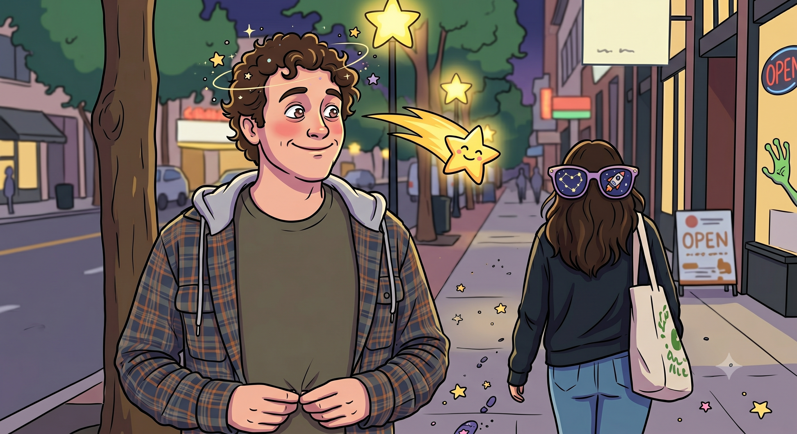

Star
Reflections on an event from circa 1999 • Penned in 2026

You know who’s lucky? Imagine your first kiss being with a girl named Star. Imagine being the first one in your entire friend group to lock down that milestone. Or maybe the second. Ha.
It happens because this is your very first real party. Your friend’s mom casually bought a mountain of alcohol for everyone, leaving you intensely curious as to why a thirteen-year-old’s birthday party includes literal cartons of 40oz beers. Out of nowhere, Star walks up, pins you flat against the wall, and looks you in the eye: “Have you ever been kissed?” You manage to mumble a no, and she just slams a full French kiss on you right then and there. You are halfway into a 40—your first 40oz ever—and your brain is short-circuiting: Wow. Why on earth am I spending all my time reading books and doing homework when I could be doing this instead?
And it isn't just a solitary kiss; it’s like three or four. There’s tongue, a bit of caressing, and your mind completely leaves your body. But here’s the catch: she has a mean boyfriend. A total asshole who treats her horribly. She hangs around the periphery of your friend group, except she is five years older than you. Still, she kisses you, and you walk away feeling like life is suddenly going to be a lot easier from here on out.
The next time you see her is at another party, and she’s standing there with the boyfriend—who now knows she kissed you. Never mind the fact that he’s twenty or something, definitely way bigger, way older, and absolutely not wiser. He looks ready to kill you. So, what do you do? Magically, a savior appears out of the crowd, offers you an immediate ride home, and casually tells you, “Kid, you’re cool.”
You never see Star again after that night, but you walk into school the next Monday as an absolute hero. Of course, that’s after you’ve endured your first real hangover. And after you’ve hosted a house full of friends for a sleepover, only to blast them awake at the crack of dawn with live bagpipe music because you had a pipe band concert that morning and absolutely had to warm up the reeds. Come to think of it, it was probably their first hangovers, too.